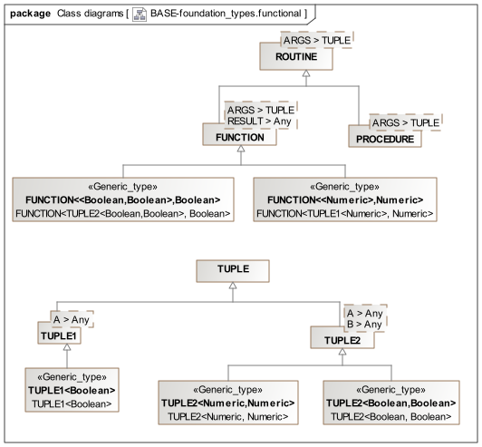

Functional Meta-types Overview A small number of meta-types are defined that correspond to functional programming primitives, otherwise known as 'closures', 'lambda expressions' and so on. These concepts are supported in most modern programming languages now, and the types defined here are intended to provide a minimal formal basis to enable other openEHR specification to defined function-related elements. Since UML does not contain native functional elements, the semantics here are approximated using normal class facilities. The following illustrates the functional package.  Figure 1. base.foundation_types.functional Package Two key abstractions are required, namely 'function as a type', and 'tuple', which enables arguments to be formalised. To provide a 'function' type, a 'routine' type is also required. For completeness, a 'procedure' type is also defined. The 'tuple' type is defined as a generic meta-type whose descendants may additionally define any number of generic parameter types, corresponding to a type list. Class Definitions ROUTINE Class Class ROUTINE<ARGS> Description Type representing a function with a return type and 0 or more arguments represented as a TUPLE. FUNCTION Class Class FUNCTION<ARGS,RESULT> Description Type representing a function with a return type and 0 or more arguments represented as a TUPLE. Inherit ROUTINE PROCEDURE Class Class PROCEDURE<ARGS> Description Type representing a procedure with 0 or more arguments represented as a TUPLE. Inherit ROUTINE TUPLE Class Class TUPLE Description Parent type of all TUPLE types. TUPLE1 Class Class TUPLE1<A> Description A Tuple type used, among other things, for representing a single typed argument within a Routine signature. Inherit TUPLE TUPLE2 Class Class TUPLE2<A,B> Description A Tuple type used, among other things, for representing two typed arguments within a Routine signature. Inherit TUPLE Terminology Package ROOT:foundation_types//master.adoc